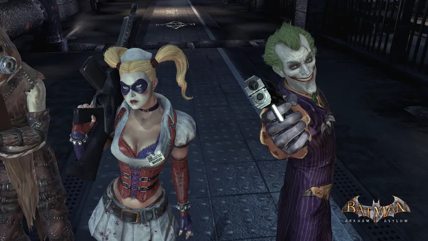
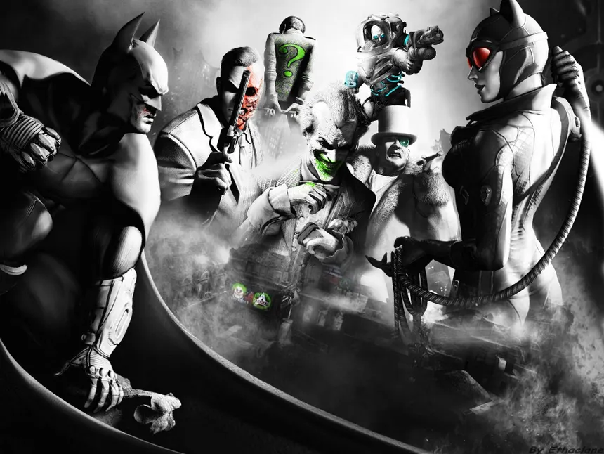
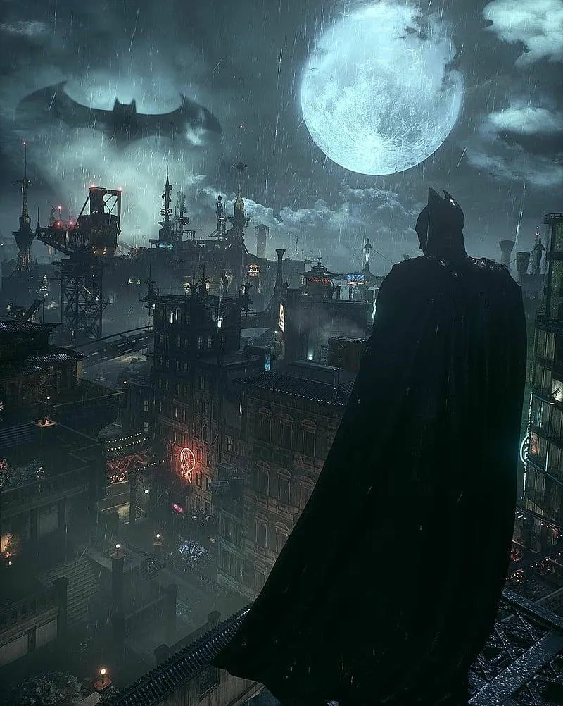

Une trilogie culte avec une ambiance sombre, un gameplay incroyable et l’un des meilleurs Batman jamais créé en jeu vidéo.
← Retour à l'accueil
Le début de la saga. Ambiance enfermée, sombre et stressante dans l’asile.

Monde ouvert, liberté totale, scénario incroyable. Sans hésitation, le meilleur.

Des graphismes de fou, Batmobile et conclusion épique des aventures de l'homme Chauve-souris.